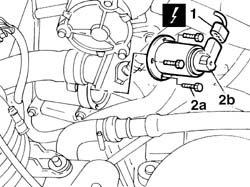

1080C26 motor for egr valve self-regulation - r r
- Path
- Procedures > 10 ENGINE > 1080 EMISSION CONTROL SYSTEM > 1080C exhaust gas recirculation system (e.g.r.) > 1080C26 motor for egr valve self-regulation - r r
- Kind
- repair procedure (removal / refitting; the operation number is the code)
- Applies to
- all engines; all production periods
- Interactive page
- https://sloeber94.github.io/elrnDB-fDbl/en/#/2584474
Applies to: all engines; all production periods
 Removing
Removing
 Refitting
RefittingDisconnect the battery negative terminal.
5530B52 Battery DRIP TRAY/SUPPORT - R.R.
1. Disconnect the EGR self-regulation motor electrical connection.
Name | Connector | |
|---|---|---|
1 | EGR solenoid | L30 |
2. Undo the bolts (2a) and remove EGR self-regulation motor (2b).

Applies to: all engines; all production periods
Refitting
RemovingPosition the motor in its seat on the valve.
Tighten the bolts securing the motor to the valve.
Connect the EGR self-regulation motor electrical connection.
Name | Connector | |
|---|---|---|
- | EGR solenoid | L30 |
5530B52 Battery DRIP TRAY/SUPPORT - R.R.
Connect the battery negative terminal.